Xero’s online accounting software connects small business owners with their numbers, their bank, and advisors anytime.
What is the purpose of the article?
To setup your Meddbase chamber with an integration to your Xero accountancy application, you need to authenticate using OAuth2.0. This article will talk you through how to setup a brand new Xero integration, or to change an existing integration from the old OAuth1.0 authentication method to the new OAuth2.0 method.
Enabling the feature and linking Meddbase to Xero
For the Xero integration to work correctly, you will need a Xero account to which you admin access, and the Accountancy Interface system feature enabled in Meddbase.
To enable the Accountancy Interface:-
1. From the Start Page navigate to Admin > Configuration > System Features.
2. Check Accountancy Interface and accept the pop up notification of automatic charges.
3. Navigate to Admin > Configuration > Accountancy.
4. In the External application section select Xero OAuth2.0 from the dropdown menu.
If you are changing your interface from the 'old' Xero authentication route to Xero OAuth2.0 your screen will instead look like shown below.
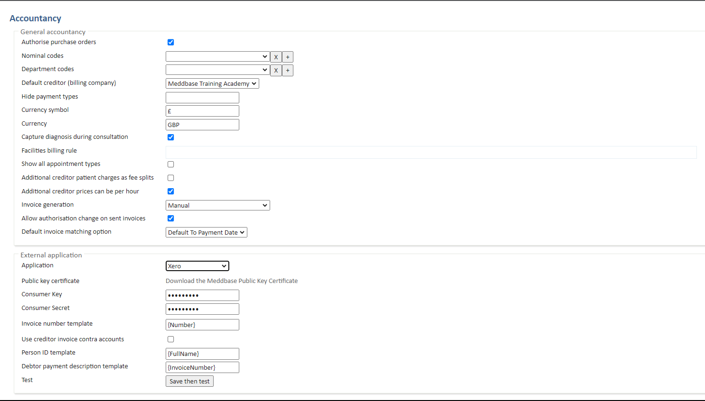
Once you select the External Application, new configuration options will become available:
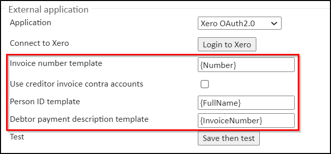
Invoice number template - this setting is specific to Xero used for creating and looking up invoices in Xero. When an invoice is created in Xero it can be passed an "Invoice number" which is displayed in most places within Xero, such as shown below, which shows an invoice that was generated from an Invoice number template value of BRL-{Number}
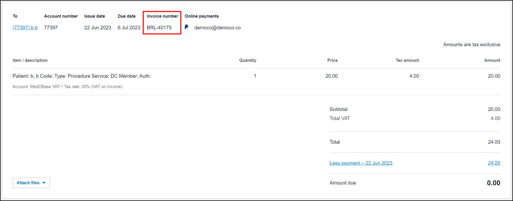
Additionally, when searching for an invoice later (for example to add payment or credit note credits) it looks for the Xero invoice using this "Invoice number" property.
This means if you change the Invoice Number template it can no longer find old invoices.
This is only used for Invoices specifically, it is not used for other entities created in the external application such as Credit Notes and Pre-Payments.
Use creditor invoice contra accounts - Xero and Economic have the concept of a 'chart of accounts' - a standard book-keeping concept. Invoices must have a 'contra' account that is where the 'money owed' is recorded. By default, the 'contra' account to use is selected for each line item in the invoice based on the nominal code and vat status. If this option is ticked then for creditor invoices only (i.e.invoices to the chamber), the selected account name will have the suffix "Creditor" appended.
Person ID template - this value is used by the following external application integrations:
E-conomic,
E-conomic full,
Xero,
Xero OAuth2.0.
For all 4 integrations it's used to populate the name of the debtor account / contact when created in the target system. When using Xero you can easily see the contact that an invoice is allocated to, you can also view all Contacts by going to Contacts > All Contacts in the main navigation menu, as shown below, where there is a contact for a patient in Meddbase named "b b", you can see the contact name generated from a Person ID template value of ({Id}) {FullName}:
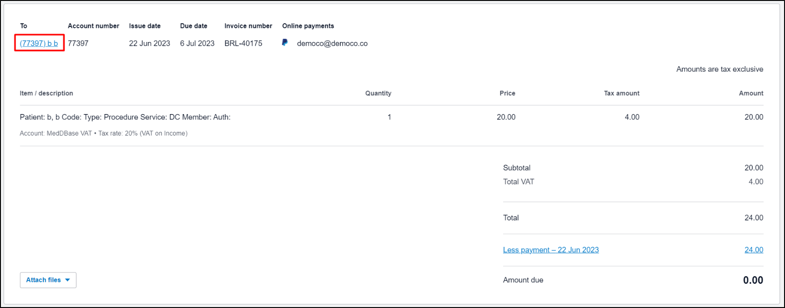
This value is only used when the debtor is a patient account type, if the debtor is any other account type (Company, etc.) then this template is not used, and the name will just be the standard "Name" of the account.
Debtor payment description template - this value is used by the following external application integrations:
E-conomic full,
Xero,
Xero OAuth2.0.
For all 3 integrations it's used to populate the descriptive text given to the line item when a payment is made. When using Xero, a payment results in the creation of a Pre-Payment inside of Xero, within the Pre-Payment it has a line item for the payment and this line item's description is generated using this template, as shown below, which was generated from a Debtor payment description template value of {InvoiceNumber}:
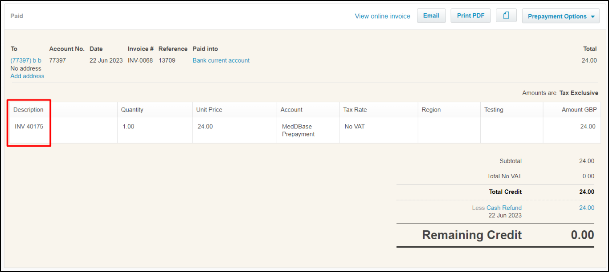
5. Click Login to Xero, which will open a new tab and ask you to login to your Xero account.
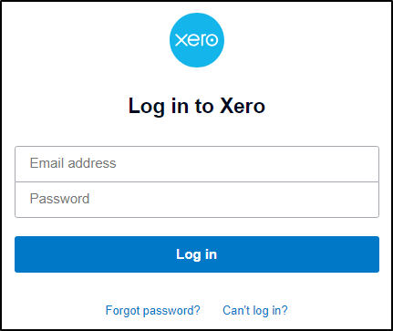
6. Choose an organisation to link your Meddbase account to (as below) and click Allow access.
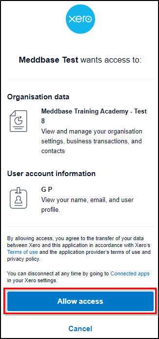
7. Next, you will be prompted to select the Xero tenant to connect the Meddbase application to and click Connect.
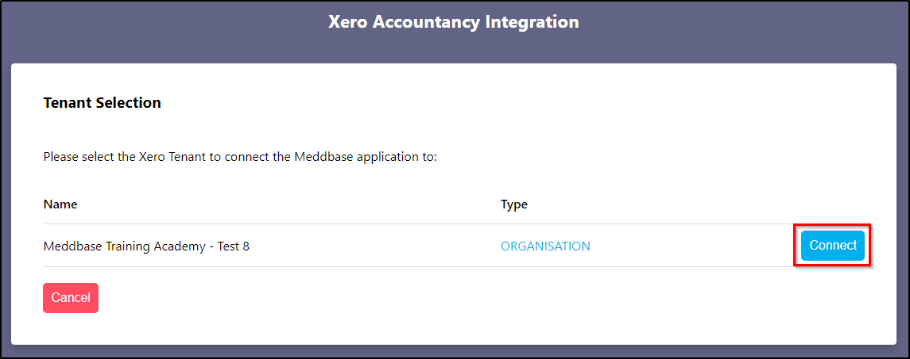
Once you select an organisation and Proceed, you'll get a confirmation and success message:
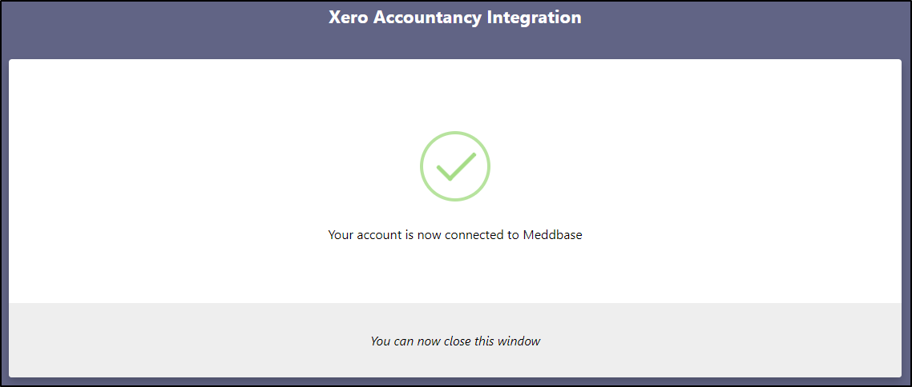
You can now continue to configure the integration.
You will need to add at least 3 required Accounts* and 1 Bank Account, to categorise Meddbase transactions.
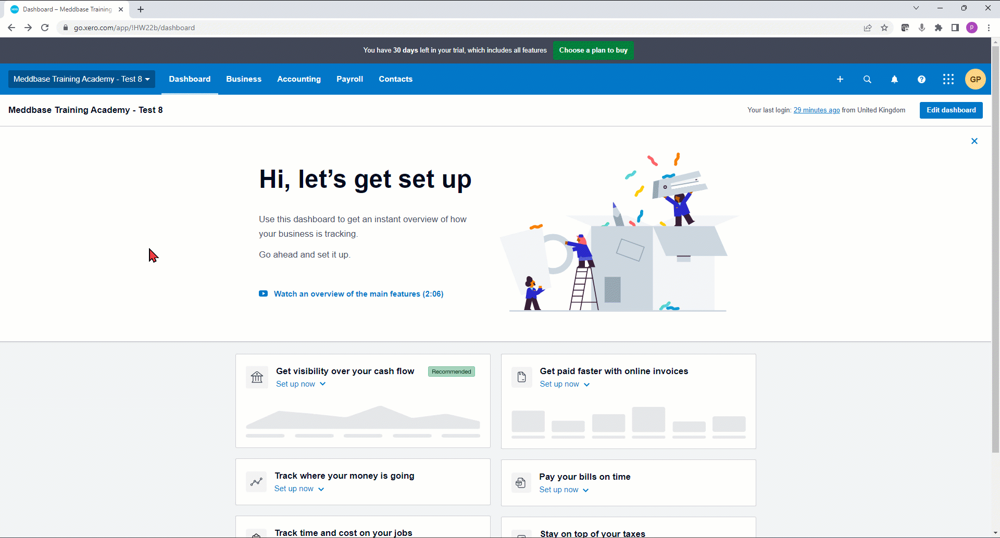
Adding MedDBase Prepayment account
This account must be set up as follows:
Account Type - Prepayment must be selected here.
Code - this is a unique code for this account in your chart of accounts. This can be any number, and Xero will automatically check whether it's available or not. It is recommended to use a high number, e.g. 6001, to keep Meddbase accounts separate from your other accounts.
Name - this has to be set to MedDBase Prepayment. Please note that this must be typed in exactly as shown.
Description (optional) - this field can be left blank. You can also use the same entry as the Name field.
Tax - this has to be set to No VAT.
Once set, click Save.
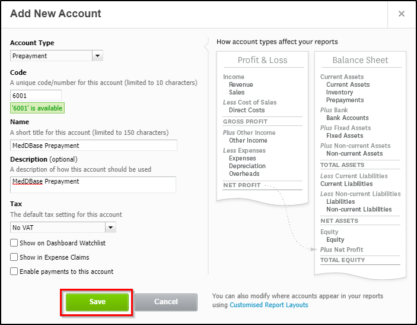
Adding MedDBase VAT account
This account must be set up as follows:
Account Type - Sales must be selected here.
Code - this is a unique code for this account in your chart of accounts. This can be anu number, and Xero will automatically check whether it's available or not. It is recommended to use a high number, e.g. 6002, to keep Meddbase accounts separate from your other accounts.
Name - this has to be set to MedDBase VAT. Please note that this must be typed in exactly as shown.
Description (optional) - this field can be left blank. You can also use the same entry as the Name field.
Tax - this has to be set to 20% (VAT on Income).
Once set, click Save.
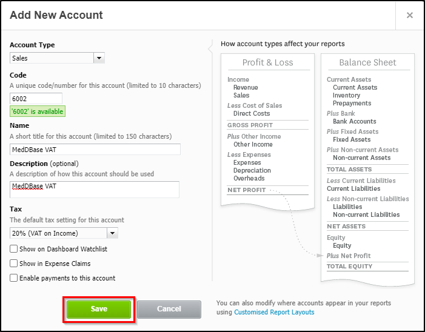
Adding MedDBase VAT Exempt account
This account must be set up as follows:
Account Type - Sales must be selected here.
Code - this is a unique code for this account in your chart of accounts. This can be anu number, and Xero will automatically check whether it's available or not. It is recommended to use a high number, e.g. 6003, to keep Meddbase accounts separate from your other accounts.
Name - this has to be set to MedDBase VAT Exempt. Please note that this must be typed in exactly as shown.
Description (optional) - this field can be left blank. You can also use the same entry as the Name field.
Tax - this has to be set to Exempt Income.
Once set, click Save.
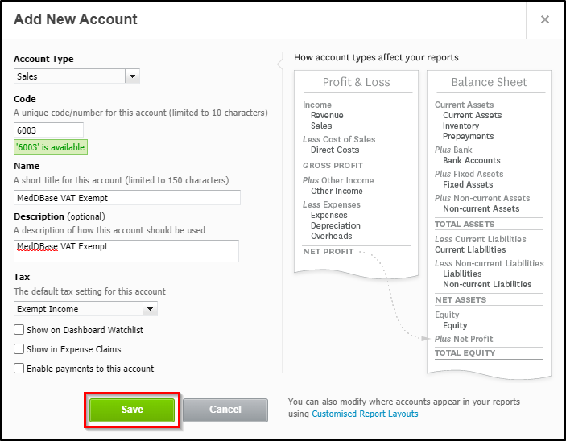
*If the Use creditor invoice contra accounts is ticked under Admin > Configuration > Accountancy > External application (only relevant when the chamber is being invoiced by other creditors) you will also need to set up a Meddbase VAT Creditor and Meddbase VAT Creditor Exempt accounts
*If Nominal Codes have been created in your chamber under Admin > Configuration > Accountancy > General accountancy > Nominal codes, you will need to set up a VAT and VAT Exempt account for each existing Nominal Code, typing the Name as Nominal Code VAT and Nominal Code VAT Exempt respectively, e.g. for code 4001, you must set up 4001 VAT, and 4001 VAT Exempt accounts.
Adding a Bank Account
From your Xero Dashboard:
ClickAccounting.
Click Chart of accounts.
Click Add Bank Account.
Name the Bank Account 'Bank current account'.
Search for your bank.
Click Agree and log in to bank.
Log in to your bank.
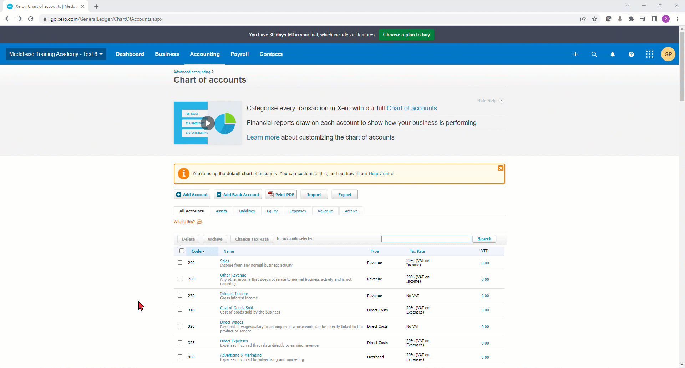
Testing your configuration
To test your setup:
From the Start Page navigate to Admin > Configuration > System Features.
Check Accountancy Interface and accept the pop up notification of automatic charges.
Navigate to Admin > Configuration > Accountancy.
In the External application section click Save and test.
Further testing and useful information
Try testing generating an invoice in Meddbase; an Invoice will only send over to Xero once it is marked as ‘Sent’.
In Xero, a ‘Contact’ is equivalent to an ‘Account’, patient or insurance company.
The ‘Item Code’ on the Bill in Xero takes the form of {Meddbase Service Code}{Service Id}, or ‘SRV’{Service Id} if the service has no Service Code in Meddbase.
So, if you successfully can see your above invoice in Xero, now match/apply a payment to that invoice in Meddbase.
In Meddbase, every payment is a prepayment and then a match; every payment, no matter even if you apply the payment directly to the invoice. It records a prepayment and then a match.
So, given the above, in Xero, every payment comes through as what is called a Prepayment, and then an Allocation is made for that prepayment to an invoice; shows as ‘Less’.
In Xero, you can then look at specific Contact for invoices, or you can just look at Accounts/ ‘Sales’ to see Paid Invoices.